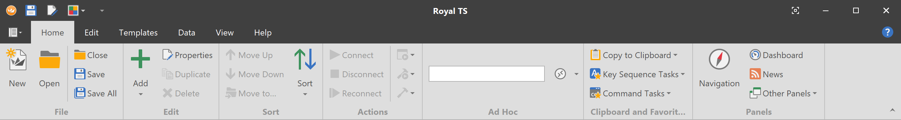
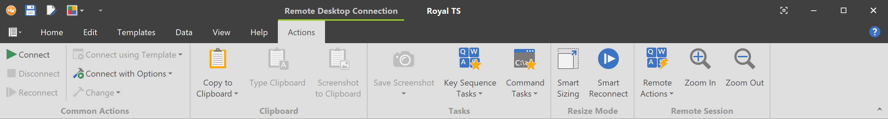
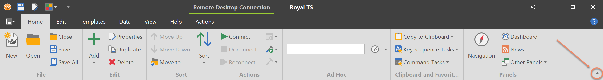
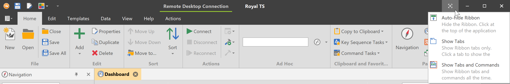
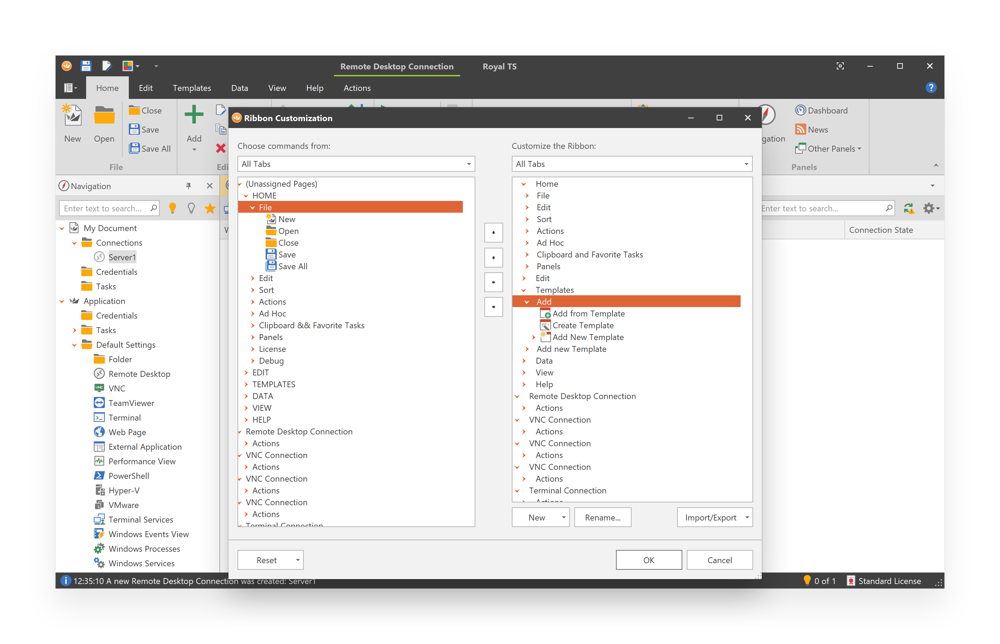
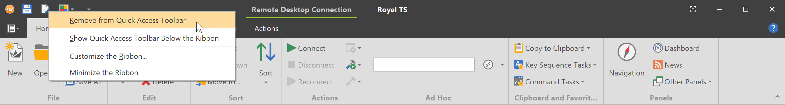
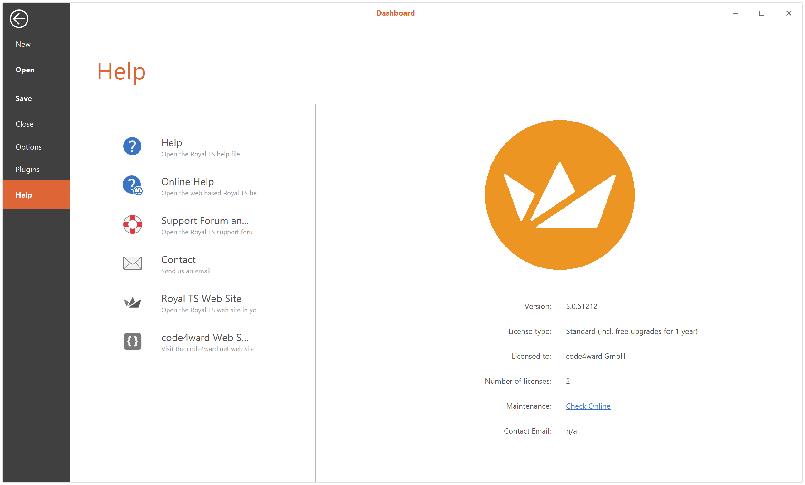

Ribbon and Backstage
Working with the Ribbon
The Office-style ribbon interface appears throughout Royal TS and replaces many menus. Commands appear in groups within the ribbon to help make them easier to find and use:

Use the tabs at the top of the view to select groups of commands. On the Home tab are the commands for creating and working with files and objects such as connections, credentials or tasks. Click the Edit tab for commands related to creating, editing and organizing objects. The Templates tab contains commands related to connection templates. On the Data tab are import and export commands. On the View tab you can change and customize the user interface.
To reduce screen clutter, some tabs are shown only when they are needed. The Actions tab in the picture above is called a "Context" tab and is only shown when a connection is selected.

Minimize the Ribbon
Right-click on a ribbon command and select Minimize the Ribbon from the context menu or use the arrow button at the upper right window corner:

To use the ribbon while it is minimized, click the tab you want to use, and then click the option or command you want to use. The ribbon goes back to being minimized after you have clicked on a command or after you have clicked the ribbon tab again.
Full Screen Modes
Royal TS also supports Office-style full screen modes:

Customize the Ribbon
The Ribbon and the Quick Access Toolbar is a customizable. To customize the Ribbon, right-click a command on the ribbon and select Customize the Ribbon...

The ribbon customization form allows you to modify groups and tabs as well as create new groups and tabs with custom arranged commands.
Customize the Quick Access Toolbar
You can move the Quick Access Toolbar from one of two possible locations, and you can add or remove buttons that represent commands to the Quick Access Toolbar:

- To add a button to the Quick Access Toolbar, right-click the command, and then click Add to Quick Access Toolbar on the shortcut menu.
- To remove a button from the Quick Access Toolbar, right-click the command you want to remove from the Quick Access Toolbar, and then click Remove from Quick Access Toolbar
- To move Quick Access Toolbar button, click and drag commands to the new position.
- To move the Quick Access Toolbar, right-click on any command on the Quick Access Toolbar, and then click Show Quick Access Toolbar Below the Ribbon to move it below the ribbon. If the Quick Access Toolbar is below the ribbon, right-click on any command, and then click Show Quick Access Toolbar Above the Ribbon to move it to the default location.
Backstage
After clicking the File tab (left next to the Home tab), you will see the Backstage view. The Backstage view is where you can create, open, close and save files, manage your recent files list, import or export data, and set your plugin and program options. 